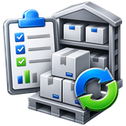

Purchases
Purchases creates Purchase and Purchase Return documents, manages landed cost and finalization, and records the supplier VAT/tax treatment when VAT is enabled.
Purchases and Purchase Returns
The same screen handles two transaction types:
| Type | Purpose | Main behavior |
|---|---|---|
| Purchases | Receive inventory from a supplier. | Supports foreign/local currency, exchange rate, discount, purchasing expenses and landed-cost calculation. |
| Returns | Return inventory to a supplier. | Uses the local currency/current item cost workflow and disables purchase-only currency, expense and discount controls. |
Select the purchase context
Use the selection buttons to choose the required Branch/Center, Supplier and Statistical Period. When finalizing a purchase, also select the Store that will receive the stock. Available locations follow the user's configured access.
IMS keeps purchase and purchase-return voucher numbering separately by transaction type and center. A Shipment No. is also associated with the selected Statistical Period.
Review existing invoices
The invoice list is filtered by the selected Center, transaction type, and—when selected—Supplier and Statistical Period. Selecting an invoice loads its header, items, totals, state, posting information, transaction log and purchasing-expense details.
Invoice states
| State | Meaning |
|---|---|
| Open | The invoice has been saved but has not yet updated the final stock/cost balances. It can still be edited or deleted according to user rights. |
| On Hold | An invoice displayed as On Hold is unavailable for normal editing, deletion and financial posting. Have an authorized administrator review its status before continuing. |
| Finalized | Inventory and costing have been committed. The invoice can no longer be edited or deleted and becomes eligible for financial posting. |
| Deleted | The open invoice was deleted from normal use and its item details/totals were cleared. |
Create a new purchase invoice
- Select Purchases.
- Select the Center, Supplier and Statistical Period.
- Click New.
- Confirm or change the invoice date when required.
- Add the purchase items manually or use Import Items.
- Select the Currency and confirm the Exchange Rate.
- Enter any purchase discount.
- Add applicable Purchasing Expenses.
- Review quantities, amounts, Cost Rate and Net Cost.
- If VAT is enabled, confirm the Supplier Invoice details, Supplier VAT No. and Tax Treatment, then review the calculated Taxable Amount, VAT Amount and Supplier Total.
- Save the invoice. It remains Open until it is explicitly finalized.
Item details
The purchase grid stores Item Code, Description, Style, Color, Size, Current Retail, Unit, Qty, Price and line Net amount. The screen recalculates invoice totals as item quantities and prices change.
When adding a single line through the input field, the current purchasing workflow looks up the IMS Item Code. The new line starts with quantity 1, the item's normal unit and its last purchase price, which can then be adjusted while the invoice is being prepared.
Import Items
For larger invoices, use the Purchase import file. IMS reads a tab-delimited text file, skips the first/header row and validates the file before loading the grid.
| Transaction | Required columns | Notes |
|---|---|---|
| Purchase | ItemCode · Unit · Qty · Price | Item Code must exist as an inventory item, Unit must exist, Qty must be greater than zero, and Price must be a valid non-negative number. |
| Purchase Return | ItemCode · Unit · Qty | The return uses the item's current IMS cost rather than an imported purchase price. |
ItemCode Unit Qty Price 30225010001 1 12 4.250 30225010002 1 6 5.100
IMS rejects invalid Item Codes, missing/unknown units, invalid quantities and invalid purchase prices. Duplicate item rows are also rejected. When row validation fails, IMS creates an -ErrorLog.txt file next to the import file showing the row and reason.
Purchasing Expenses
Click Expenses to add costs configured in Financial → Purchasing Expenses. Each expense type can be added once to the invoice. IMS shows the original invoice amount, Total Expenses and the resulting Net Amount/landed amount.
Purchasing Expenses are included in landed/local cost and later participate in the accounting journal using the account configured for each expense type.
Currency, exchange rate and Cost Rate
Purchase invoices support the currencies and current currency-rate setup maintained in IMS. The local currency uses an exchange rate of 1; a foreign currency loads its configured cost/exchange rate, which can be reviewed as part of the purchase.
| Value | Calculation / purpose |
|---|---|
| Total Retail | Sum of the current retail value of all purchased quantities. |
| Total Qty | Total purchased quantity. |
| Total Amount | Sum of item Qty × purchase Price before invoice discount. |
| Net Amount | Total Amount less the purchase discount. |
| Net Local | Net Amount converted by the currency exchange rate. |
| Cost Rate | The landed-cost multiplier used to convert the foreign purchase price into local landed cost. When expenses exist, IMS includes those expenses in the effective rate. |
| Net Cost | Net Local plus Purchasing Expenses. |
Purchase VAT / Tax
When Enable Value-Added Tax is active in System Settings, Purchases displays a VAT/tax section and loads the active treatments defined in Financial → Integration Setup.
| Field | Behavior |
|---|---|
| Supplier Invoice No. | External supplier invoice number. Required for every tax type except OUTSIDE_SCOPE. |
| Supplier Invoice Date | Defaults to the new IMS purchase date and is required for every tax type except OUTSIDE_SCOPE. |
| Supplier VAT No. | Loaded from the selected Supplier. Required for a DOMESTIC treatment with a positive tax rate. |
| Tax Treatment | Required active Purchase VAT / Tax Code. |
| Taxable Amount | For non-manual tax codes IMS uses Net Local. For MANUAL base mode it is entered by the user and must be greater than zero. |
| VAT Amount | Automatically calculated from Taxable Amount × tax rate for taxable automatic modes. MANUAL base mode permits adjustment on a new document. For an eligible saved purchase, use Edit VAT. |
| Supplier Total | Net Local + VAT only when the tax code Posting Mode is SUPPLIER; otherwise it remains Net Local. |
| Tax Reference No. | Required for IMPORT_PAID and IMPORT_DEFERRED treatments. |
| Tax Reference Date | Optional date stored with the tax/customs reference. |
Automatic calculation
Automatic taxable modes use Net Local as the taxable amount. ZERO, EXEMPT and OUTSIDE_SCOPE calculate zero VAT. Other tax types calculate VAT using the tax code's stored rate and round the result to three decimal places using midpoint-away-from-zero rounding.
When saved, IMS also splits VAT into recoverable and non-recoverable amounts from the tax code's Recoverable %, using the same three-decimal rounding for the recoverable amount.
Default treatment from the Supplier
The current IMS 9.4.6 Bahrain workflow attempts to select BH_STD_10 for a VAT-registered supplier and BH_OUT_SCOPE for a non-registered supplier. If that code is not available among active tax codes, IMS selects the first available treatment.
Edit an open invoice
An Open invoice can expose separate edit actions according to the user's permissions:
| Edit action | Purpose |
|---|---|
| Statistical Period | Change the invoice's period/shipment assignment. |
| Date | Change the purchase invoice date. |
| Items | Add, remove or change item quantities/prices/units. |
| Discount | Change the invoice discount. |
| Currency | Change purchase currency/exchange data. |
| Expenses | Change the purchasing-expense allocation. |
| Edit VAT | Correct only the VAT Amount on an eligible Open purchase; see the VAT correction procedure. |
| Notes | Edit the purchase notes. |
| Finalize | Start the inventory/cost finalization process. |
Finalized, Deleted and currently On Hold invoices cannot be edited. Purchase Returns do not offer the purchase-only Currency and Expenses edit actions.
Correct the VAT amount on a saved purchase
Open Inventory → Purchases, find the invoice and choose Edit → Edit VAT. This action requires the Edit Purchases permission and enabled company VAT. It applies only to an Open purchase with no posted journal, one existing VAT record and an active positive-rate tax treatment. Purchase Returns, Finalized, On Hold or Deleted documents, and ZERO, EXEMPT or OUTSIDE_SCOPE treatments are not eligible.
- Compare the saved VAT Amount with the supplier's tax invoice.
- Choose Edit VAT and enter the corrected VAT Amount. Only that amount is editable in this mode; the tax treatment, rate, taxable amount and supplier/reference details remain unchanged.
- Enter a non-negative amount with no more than three decimal places. For example, correct 3,558.058 to 3,803.120 BHD when that is the amount supported by the supplier invoice.
- Review Supplier Total, then click Save. Reopen/review the invoice and its Log to confirm the saved amount and the named user responsible for the change. Cancel leaves the saved amount unchanged.
Supplier Total includes the corrected VAT only for the SUPPLIER posting mode. Saving recalculates the recoverable VAT using the tax code's current Recoverable %, rounded to three decimals, and assigns the remainder to non-recoverable VAT. These are recalculated tax allocations; Edit VAT does not change merchandise prices, invoice discounts or purchasing expenses.
IMS rejects invalid amounts, invalid recoverable percentages and missing or conflicting VAT records. It rechecks eligibility on Save. If the stored VAT record changed since you opened it, refresh/reopen the invoice, compare the current values and enter the correction again only if it is still needed. Do not repeatedly save from an outdated view. If IMS cannot confirm the save outcome, reopen and reconcile the invoice before retrying.
A saved correction records the before/after VAT amounts against the signed-in responsible user in the transaction Log. Financial posting still requires the configured VAT accounts. If the saved split includes non-recoverable VAT, posting is blocked until it is assigned to inventory/expense cost through the appropriate accounting process; Edit VAT does not perform that cost allocation.
Finalize a purchase
Finalization is the point where an Open purchase becomes an inventory/cost transaction. IMS warns the user that the process is irreversible through normal editing and that average cost will be recalculated.
During finalization, IMS locks the invoice and affected stock/item records, calculates the resulting average costs, updates the selected store's quantities and the affected items' costs, and marks the invoice Finalized in one database transaction. A purchase also updates last-purchase information. Activity logging and display refresh take place after the database transaction.
Finalization outcome
Finalization reports whether the database transaction completed, was rolled back, or has an unconfirmed commit outcome. A display-refresh failure after a confirmed commit does not reverse the finalized document.
Purchase Returns
A Purchase Return follows the same Open → Finalize workflow but removes quantity from the selected store. Before committing the return, IMS verifies that the store has enough quantity for every returned item.
If any returned quantity exceeds the current store balance, IMS rolls back finalization and attempts to write a variance log containing Item Code, Return Qty, Current Balance and Variance. IMS displays a warning if the log cannot be written.
Financial integration — current Al-Shamel deployment
Once a purchase or purchase return is Finalized, users with the Financial Posting permission can open the posting window. In the current deployment, IMS connects directly to Al-Shamel and writes the resulting journal to the financial system. When VAT is enabled, the saved purchase-tax record supplies the document tax treatment, tax amount and recoverable/non-recoverable split used by the VAT-aware purchasing workflow.
The posting window builds a balanced journal using the store account/cost-center setup, the selected LC / Supplier Account, the Earned Discount account when an invoice discount exists, and the configured accounts for Purchasing Expenses.
Select the LC / Supplier account
The account selector reads eligible Letter of Credit / supplier accounts directly from the Al-Shamel chart of accounts. Users can search by Account No., Arabic Name or English Name and return the selected account to the purchase-journal window.
Review and post the journal
IMS creates the purchase journal with separate Debit/Credit lines and verifies the journal total before posting. A normal purchase and a purchase return reverse the accounting direction of the relevant entries.
After a successful post, IMS stores the financial Journal No., posting user, posting date/time and posting code against the purchase invoice and records the action in the IMS transaction log.
Unpost
For a transaction that was posted through IMS, the Post action changes to UnPost. After confirmation, IMS removes the corresponding journal entry from Al-Shamel and clears the stored posting information from the IMS purchase invoice.
Transaction log
Purchases maintains an activity log for the selected invoice. It records actions such as invoice creation, edits, finalization, posting/unposting and recovery activity. When purchasing expenses exist, their details are also shown with the invoice information.
Permissions
Purchasing actions are controlled separately. Depending on the user's Group Policy, IMS can independently allow or block creating purchases, editing purchases, deleting open purchases, finalizing purchases and financial posting.